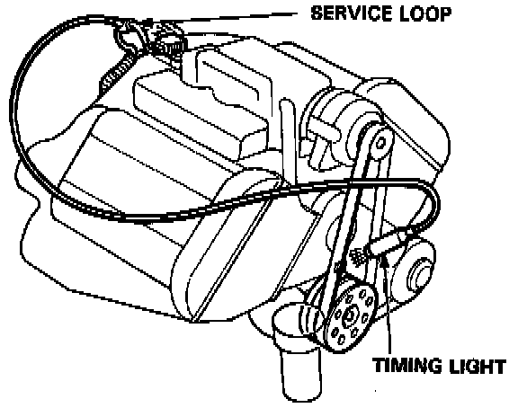
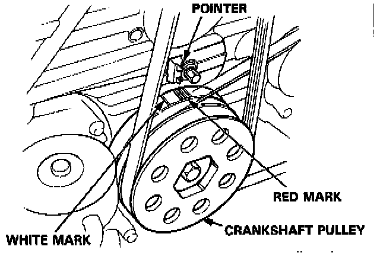
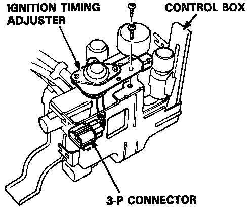
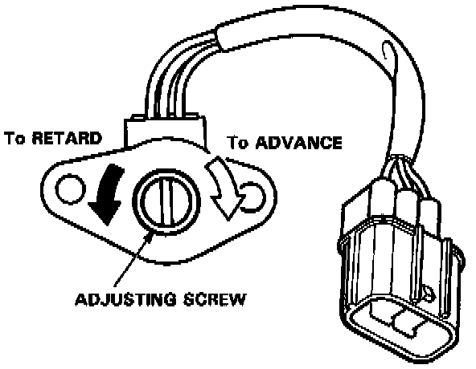

Ignition Timing: Adjustments
PROCEDURE1. Start the engine and allow it to warm up (radiator fan comes on).
2. Pull out the service check connector located under the middle of the dash. Connector the BLU and GRN/WHT terminals with a jumper wire.
3. Check the idle speed.


4. Connect a timing light to the service loop; while the engine idles, point the light toward the pointer on the timing belt cover.
5. If necessary, adjust ignition timing to the following specifications:
Ignition Timing: 15° ± 2° BTDC (RED mark)
Idle Speed (rpm):
800 ± 5O (M/T)
75O ± 5O (A/T in [N] or [P])
NOTE: All electrical systems turned OFF.
6. If necessary, adjust the ignition timing, adjust by turning the adjusting screw on the ignition timing adjuster in the control box.
- Remove the control box cover.

- Remove the two screws from the control box then disconnect the 3-P connector from the ignition timing adjuster.
- Remove the ignition timing adjuster from the control box.
- Drill the two rivets off with a 3/16 in. drill bit, then separate the cover from the adjuster.
CAUTION: Do not damage the adjuster when removing the rivets.

- Reconnect the adjuster to the car, start the engine, and turn the adjusting screw counterclockwise to retard the timing, or clockwise to advance it, as necessary.
7. Remove the jumper wire from the service check connector.
8. After adjusting, reinstall the cover on the ignition timing adjuster with new rivets.